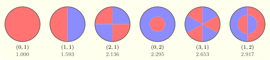

11.2 The vibrating drum
A circular membrane of radius \(a\), fixed at its rim, obeys \(u_{tt} = c^2\Delta u\) in \(r < a\) with \(u = 0\) at \(r = a\). Separating \(u = R(r)\Theta (\theta )T(t)\) gives \(T'' = -c^2k^2T\), \(\Theta '' = -m^2\Theta \) with \(\Theta \) \(2\pi \)-periodic, so \(m = 0, 1, 2, \ldots \) and \(\Theta = \cos m\theta \) or \(\sin m\theta \), and \[ r^2R'' + rR' + (k^2r^2 - m^2)R = 0 , \] Bessel’s equation in the variable \(kr\). Its solution bounded at the origin is \(J_m(kr)\); the other, \(Y_m\), is singular there. The rim condition \(J_m(ka) = 0\) makes \(ka\) a zero of \(J_m\). Writing \(j_{mn}\) for the \(n\)th positive zero, the normal modes and their angular frequencies are \[ u_{mn} = J_m\Bigl (\frac {j_{mn}r}a\Bigr )\cos m\theta \,\cos \omega _{mn}t, \qquad \omega _{mn} = \frac {c\,j_{mn}}a , \] together with the \(\sin m\theta \) and \(\sin \omega _{mn}t\) variants. Mode \((m, n)\) has \(m\) nodal diameters and \(n - 1\) nodal circles (Figure 14). Unlike those of a string, the frequencies are not integer multiples of the fundamental: \(\omega _{11}/\omega _{01} = 1.593\), \(\omega _{21}/\omega _{01} = 2.136\) (Software 11.6.1), which is why a drum has a less definite pitch than a string.

To expand initial data in these modes one needs orthogonality.
Theorem 11.2.1. If \(\alpha \) and \(\beta \) are distinct positive zeros of \(J_m\), then \[ \int _0^1J_m(\alpha r)J_m(\beta r)\,r\,dr = 0, \qquad \int _0^1J_m(\alpha r)^2\,r\,dr = \tfrac 12J_m'(\alpha )^2 = \tfrac 12J_{m + 1}(\alpha )^2 . \] Moreover, the functions \(J_m(j_{mn}r)\), \(n = 1, 2, \ldots \), are complete: every \(f\) with \(\int _0^1f^2r\,dr < \infty \) is the mean-square limit of its expansion \(\sum c_nJ_m(j_{mn}r)\), with \(c_n = \int _0^1fJ_m(j_{mn}r)\,r\,dr\big /\frac 12J_{m + 1}(j_{mn})^2\).
Proof. \(U = J_m(\alpha r)\) and \(V = J_m(\beta r)\) satisfy \((rU')' + (\alpha ^2r - m^2/r)U = 0\) and the same with \(\beta \). Multiplying crosswise and subtracting, \(\bigl (r(U'V - UV')\bigr )' = (\beta ^2 - \alpha ^2)rUV\). Integrating from \(0\) to \(1\), for any \(\beta \) and a zero \(\alpha \), \[ (\beta ^2 - \alpha ^2)\int _0^1UV\,r\,dr = \alpha J_m'(\alpha )J_m(\beta ) , \] which vanishes when \(\beta \) is also a zero. Letting \(\beta \to \alpha \), \(J_m(\beta ) \approx J_m'(\alpha )(\beta - \alpha )\) and \(\beta ^2 - \alpha ^2 \approx 2\alpha (\beta - \alpha )\), giving the norm; at a zero, the recurrence \(J_m' = \frac mxJ_m - J_{m + 1}\) gives \(J_m'(\alpha ) = -J_{m + 1}(\alpha )\). Completeness is the Sturm–Liouville expansion theorem for this singular problem, which we quote. □
Questions on this section
Stuck on something here? Ask below and it stays attached to this topic.